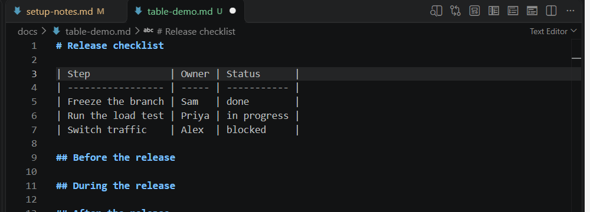
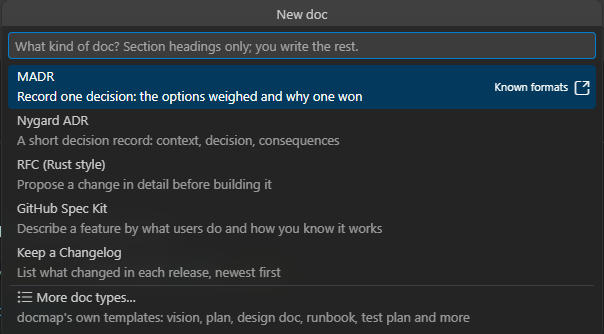
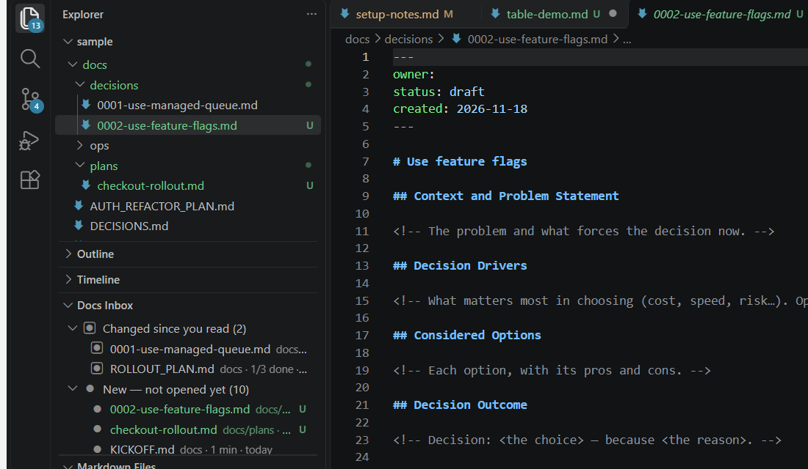

Writing docs
Small helpers for typing Markdown, and templates that start a new doc in a clear shape.
-
Bold, italic, strikethrough and lists
“I keep forgetting the ** and ~~ marks.”
Ctrl+B bold, Ctrl+I italic, Alt+S strikethrough. Lists continue when you press Enter.
Where: in the text of any
.mdfile. -
Format Table
“My table's columns are all over the place.”
Lines up every column so the table is easy to read as text.
Where: right-click inside a table → Format Table.

-
Insert / Update Table of Contents
“My README is long, and readers get lost.”
Adds a list of links to every heading, and refreshes it when the headings change.
Where: right-click in a
.mdfile → Insert / Update Table of Contents.
-
New Doc from Template
“I stare at a blank page. What sections should a plan even have?”
Starts the doc for you: owner, status and date at the top, the right sections, and a grey hint under each. Well-known formats first, each with a ↗ read more link; More doc types… for plans, runbooks and more. next update Before saving, a Save the new doc as box shows where it will go, and you can change it.
Where: the new-file button on the Docs Inbox title, or Command Palette → New Doc from Template… next update Or right-click any folder → New Doc from Template Here…
Well-known formats
- MADR (decision record)
- Nygard ADR
- RFC
- GitHub Spec Kit (feature spec)
- Keep a Changelog
More doc types…
- Vision
- Scope
- Plan
- Architecture
- Design doc
- Ticket
- Runbook
- Design system (DESIGN.md)
- Test plan
- Postmortem
- Release notes
- Agent guide (AGENTS.md)
- Structure

-
New docs follow your team
“New docs end up in random places.”
A new decision record, design or spec goes in the folder your team already uses, numbered like its neighbours, in your team's own template.
Where: automatic with New Doc from Template…. Your own template goes in
docs/templates/.
-
Restructure into a clear doc
“This old doc is a mess, but everything in it matters.”
Your AI agent moves the text into a clear shape, keeping every fact and deleting nothing. Missing parts become open questions.
Where: ⋯ Ask my AI agent → Ask my AI agent about this file… → Restructure into a clear doc.

Want step-by-step examples to try? In VS Code press Ctrl+Shift+P and run Help (All Features).